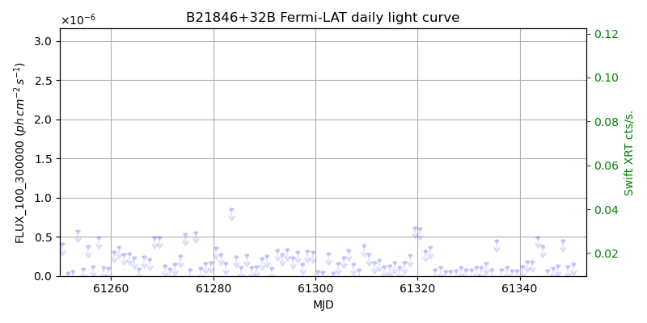
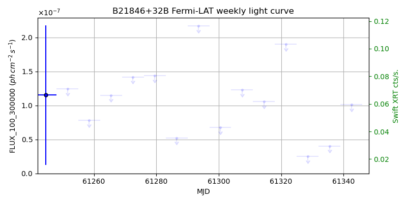
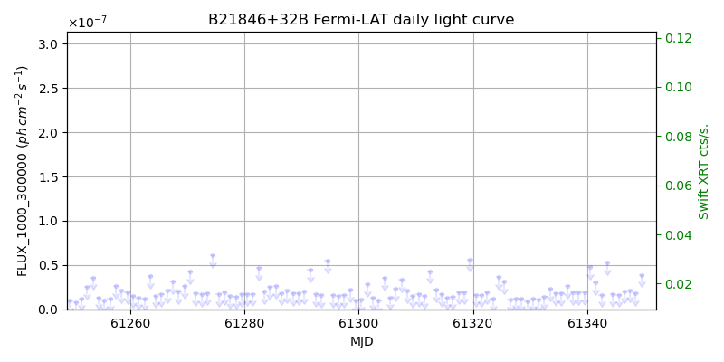
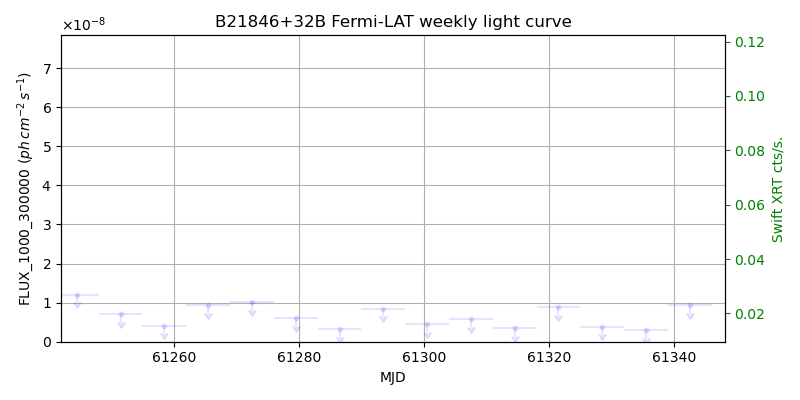

LAT Lightcurve site: https://fermi.gsfc.nasa.gov/ssc/data/access/lat/msl_lc/source/B2_1846p32B
Swift site: https://www.swift.psu.edu/monitoring/source.php?source=B21846+32B
NED: Query
Time of last update of this page: UT: 2026-11-07 16:25 (MJD: 61351.684)
| Property | Value |
|---|---|
| R.A. | 18:48:34.32 |
| Dec. | 32:43:58.8 |
| z | 0.918 |
| 3FGL SpectrumType | |
| 3FGL PL Index | -1.00 |
| 3FGL Flux_100_300000 | -1.00e+00 |
| 3FGL Flux_1000_300000 | -1.00e+00 |
| 3FGL Flux >200 GeV | -1.00e+00 |
| 3FGL Extrap. Crab >200 GeV | -1.00 |
| 3FGL Flux After EBL Absorption >200GeV | -1.00e+00 |
| 3FGL EBL Crab Fraction >200GeV | -1.00 |

| MJD | dMJD | Flux | dFlux | Frac3FGL | FracCrab>200GeV | EBLFracCrab>200GeV |
|---|---|---|---|---|---|---|
| 61346.50 | 0.50 | 1.05e-07 | 0.00e+00 | 0.00 | 0.00 | -0.00 |
| 61347.50 | 0.50 | 1.34e-07 | 0.00e+00 | 0.00 | 0.00 | -0.00 |
| 61348.50 | 0.50 | 4.51e-07 | 0.00e+00 | 0.00 | 0.00 | -0.00 |
| 61349.50 | 0.50 | 1.19e-07 | 0.00e+00 | 0.00 | 0.00 | -0.00 |
| 61350.50 | 0.50 | 1.47e-07 | 0.00e+00 | 0.00 | 0.00 | -0.00 |

| MJD | dMJD | Flux | dFlux | Frac3FGL | FracCrab>200GeV | EBLFracCrab>200GeV |
|---|---|---|---|---|---|---|
| 61314.50 | 3.50 | 1.06e-07 | 0.00e+00 | 0.00 | 0.00 | -0.00 |
| 61321.50 | 3.50 | 1.90e-07 | 0.00e+00 | 0.00 | 0.00 | -0.00 |
| 61328.50 | 3.50 | 2.52e-08 | 0.00e+00 | 0.00 | 0.00 | -0.00 |
| 61335.50 | 3.50 | 4.04e-08 | 0.00e+00 | 0.00 | 0.00 | -0.00 |
| 61342.50 | 3.50 | 1.01e-07 | 0.00e+00 | 0.00 | 0.00 | -0.00 |

| MJD | dMJD | Flux | dFlux | Frac3FGL | FracCrab>200GeV | EBLFracCrab>200GeV |
|---|---|---|---|---|---|---|
| 61346.50 | 0.50 | 2.06e-08 | 0.00e+00 | 0.00 | 0.00 | -0.00 |
| 61347.50 | 0.50 | 2.15e-08 | 0.00e+00 | 0.00 | 0.00 | -0.00 |
| 61348.50 | 0.50 | 1.79e-08 | 0.00e+00 | 0.00 | 0.00 | -0.00 |
| 61349.50 | 0.50 | 3.89e-08 | 0.00e+00 | 0.00 | 0.00 | -0.00 |
| 61350.50 | 0.50 | -1.00e+00 | 0.00e+00 | 0.00 | 0.00 | -0.00 |

| MJD | dMJD | Flux | dFlux | Frac3FGL | FracCrab>200GeV | EBLFracCrab>200GeV |
|---|---|---|---|---|---|---|
| 61314.50 | 3.50 | 3.53e-09 | 0.00e+00 | 0.00 | 0.00 | -0.00 |
| 61321.50 | 3.50 | 8.77e-09 | 0.00e+00 | 0.00 | 0.00 | -0.00 |
| 61328.50 | 3.50 | 3.82e-09 | 0.00e+00 | 0.00 | 0.00 | -0.00 |
| 61335.50 | 3.50 | 3.02e-09 | 0.00e+00 | 0.00 | 0.00 | -0.00 |
| 61342.50 | 3.50 | 9.29e-09 | 0.00e+00 | 0.00 | 0.00 | -0.00 |
--------------------------------------------------------- Using user-supplied coords: 18:48:34.32 32:43:58.8 2000 --------------------------------------------------------- FLWO UT night of: 2026-11-08 Local Sid. @ Midnight: 02:46 Sunset (-15.0) (local, UT): 18:38 01:38 Sunrise (-15.0) (local, UT): 05:37 12:37 Moonrise (local, UT): Moonset (local, UT): Moon phase: 0.01 --------------------------------------------------------- AzTime LSID UT Obj_el Obj_az Mn_el Mn_az Sep. --------------------------------------------------------- 18:38 21:23 01:38 57.6 282.4 -28.7 267.4 87.2 19:08 21:53 02:08 51.4 284.3 -34.9 271.0 87.0 19:38 22:23 02:38 45.2 286.3 -41.1 275.0 86.8 20:08 22:53 03:08 39.1 288.6 -47.2 279.4 86.6 20:38 23:23 03:38 33.1 290.9 -53.2 284.6 86.4 21:08 23:54 04:08 27.2 293.5 -59.1 291.1 86.2 21:38 00:24 04:38 21.4 296.2 -64.6 299.6 86.0 22:08 00:54 05:08 15.7 299.2 -69.7 311.6 85.8 22:38 01:24 05:38 10.2 302.4 -73.6 329.5 85.6 23:08 01:54 06:08 5.0 305.9 -75.7 354.4 85.3 23:38 02:24 06:38 0.3 309.7 -74.9 21.4 85.1 00:08 02:54 07:08 -4.3 313.8 -71.7 42.7 84.9 00:38 03:24 07:38 -9.4 318.3 -67.1 57.1 84.7 01:08 03:54 08:08 -13.5 323.3 -61.8 67.1 84.5 01:38 04:24 08:38 -17.1 328.7 -56.1 74.4 84.3 02:08 04:54 09:08 -20.1 334.5 -50.2 80.1 84.1 02:38 05:24 09:38 -22.5 340.8 -44.1 84.9 83.9 03:08 05:54 10:08 -24.3 347.4 -38.1 89.1 83.8 03:38 06:25 10:38 -25.3 354.3 -32.0 93.0 83.6 04:08 06:55 11:08 -25.5 1.3 -25.9 96.6 83.5 04:38 07:25 11:38 -25.0 8.3 -19.9 100.1 83.3 05:08 07:55 12:08 -23.7 15.1 -13.9 103.7 83.2 05:37 08:24 12:37 -21.8 21.3 -8.3 107.1 83.1 --------------------------------------------------------- Dark hours >55 deg.: 0.21 srcstart (UT): 2026-11-08 01:38 srcend (UT): 2026-11-08 01:50